The feel
Steampunk imagines an alternate nineteenth century, usually a Victorian or Edwardian England crowded with inventions.1 Its makers prize brass, copper, wood and leather, fetishise cogs, springs, sprockets and wheels, and love the sight of steam rising from a working machine.2 Danger is part of the appeal: steampunk recasts the risk of a machine as a sign that it is alive.2
It works because the technology is legible: steampunks want machines that are "visible, human, fallible, and, above all, accessible", and take pleasure in understanding them, where modern devices work out of sight inside sealed boxes.2 The darker strand keeps the bill in view: Victorian London, where steampunk is often set, paid for its growth in filth and squalor.1 In Dishonored the fuel is whale oil: it powers the technology, and Dunwall's stacks belch its smoke.3,4
- riveted
- pressurised
- inventive
- sooty
- ornate
- hand-cranked
Where it comes from
Jules Verne and H. G. Wells are the generally acknowledged forerunners.2 K. W. Jeter coined the name in an April 1987 letter to Locus, offering "steam-punks" as a collective term for the Victorian fantasies of Tim Powers, James Blaylock and himself, which had begun with his Morlock Night (1979).5,1 Gibson and Sterling's The Difference Engine (1990), set in a Victorian Britain where Babbage's engines were built and changed everything, is counted among the genre's foundational novels.6,2 Steampunk then spread into role-playing games, comics and anime such as Steamboy (2004),2 and from about 2007 into fashion, with brass-framed goggles and clockwork accessories.1
Core elements
Exposed mechanisms
Steampunk answers the sealed black box: its makers see modern technology as shut off from ordinary people, and want machines anyone can rip open, understand and rebuild.2 They also want back the awe of the great engines, like the Corliss engine of 1876, admired for its flywheel, walking beams, cylinders, crankshaft and piston rods.2
Brass, copper, wood and leather
These are the materials of the period, valued because they feel authentic and friendly even when they are fragile, while plastic is reviled as the scourge of the twentieth century.2 Decoration should grow out of the form and the function, which Jake von Slatt sees as the Victorian way.2
A visible power source
Somewhere behind most early steampunk visions are "filthy coal heaps or driving pistons".1 Games make the fuel a landmark: Dunwall's stacks belch whale-oil smoke,4 and Frostpunk's city is laid out in a circle around the generator that rises from the ice.7
An alternate nineteenth century
Most steampunk is Victorian or Edwardian and stops short of the First World War,1 though fans stretch it from 1830 to 1930.8 Anachronism is the point: Arkane set Dunwall in a "gap" between a 17th-century look and 20th-century technology.2,4
Airships
The zeppelin is the classic example of steampunk's fascination with disastrous technology.2 Steampunk art often borrows its tubular shape, and usually shows the ship in everyday use rather than going down in flames.2 The fantasy has a real root: the first successful application of mechanical power to flight was Henri Giffard's steam-driven dirigible of 1852.9
Handcrafted machines
Each machine has its own character: the musician Thomas Truax calls the instruments he builds from industrial and vintage parts "little beings, bandmates", and says no one can copy the process that made them.2 Abney Park's Robert Brown frames steampunk as a reaction against mass production, looking back to when artists, artisans and craftsmen made things.8
How to do it
Build the world around its fuel
Arkane built Dunwall's economy on whaling and designed a whaling ship to match,10 and the city's stacks belch whale-oil smoke over the rooftops.4 In Frostpunk, the generator rising from the ice, with the city in a circle around it, was there from the start of the redesign.7
Draw from real industrial cities
Arkane's artists walked London and Edinburgh by back streets instead of tourist routes, noting details such as how the street lights behaved,4 and saw brick buildings with steel pipes on the outside.10 Frostpunk's lead artist took building details and window shapes from the Victorian era, but most of the look from industrial structures around the world, such as steel bridges.11
Design machines that could work
Steampunk makers hold to a rule that what they build must actually work.2 Arkane made its rail cars fully functional and its horseless carriages plausible, with Viktor Antonov working out each vehicle's suspension, details and personality.10 In gear trains, give every spur pinion at least five teeth so it stays in continuous contact.12
Texture and weather the metal
Raw brass and copper are white (1.0) in the metallic map, with a base colour of 180 to 255 sRGB, while rust and other oxidation count as non-metal, black in the metallic map, and dirt takes greys in between.13 Roughness runs from 0.0 smooth to 1.0 rough, so use it to tell how each surface has been handled and exposed to the weather.13 Wear the edges most likely to be knocked or scratched, finding them with a curvature map,14 and build grime into crevices from curvature and ambient occlusion.15
Light streets with lamps and moonlight
Arkane's art director named the painters Jean-Eugène Buland and John Atkinson Grimshaw as important sources.4 Grimshaw painted city streets at night, lit by the new artificial lights together with moonlight.16 Set lamps by colour temperature: a candle is about 1800 K and a soft warm bulb 2700 K, against 6500 K white.17
Animate the moving parts
Steampunks love the sight of clouds of steam from working machinery, and the noise machines make as they run.2 Keep the gearing honest in idle loops: a gear with twice the teeth of its pinion turns at half the speed.12
Cheat sheet
- Materials
- Brass, copper, wood, leather and papier-mâché. No plastic2
- Metal
- Metallic 1.0, base colour 180 to 255 sRGB, rust 0.013
- Gears
- Speed follows tooth count. Spur pinions need 5 or more teeth12
- Light
- Candle 1800 K, warm bulb 2700 K, white 6500 K17
- Airships
- Tubular envelope, shown in everyday use2
- Type
- Clarendon (1845): bracketed slab serifs, strong thick and thin contrast18
Do
- Show the fuel and where its smoke goes, as Dunwall's whale-oil stacks do.4
- Make machines that could plausibly run, down to the suspension.10
- Walk real streets for reference, by the back streets rather than the tourist routes.4
- Invent your own design language. Antonov's Dunwall is steampunk with "no rivets, no brass, no copper, and no tubes".10
- Let roughness record how each surface has been handled and weathered.13
Avoid
- Fake cogs and gears pasted on as a skin. Rebecca Onion calls a laptop skin covered in them the steampunk aesthetic stripped of its meaning.2
- Plastic, which steampunk makers revile as the scourge of the twentieth century.2
- Marking dirt or rust as raw metal, or giving bare metal a base colour too dark for its 70 to 100% reflectance.13
- A dusty period piece. Arkane made sure Dunwall was not "dusty and boring".10
- A world too strange to read. Antonov warns that an invented place can lose its appeal if it is too strange.10
Tools and tutorials
- Gear Generator
Lay out a gear train in the browser and watch it turn before you model or animate it.
- Extra Mesh Objects for Blender
Adds parametric gears and worm gears with proper teeth.
- Physically Based
Measured base colours for brass, copper, iron and more, ready for PBR shaders.
- Poly Haven metal textures
Free scanned rusty, painted and polished metals.
- Substance 3D Painter: Metal Edge Wear
The generator that wears the edges of a mesh from its curvature map. The Dirt generator sits beside it.
Palette
Sampled from the references: cyanotype from a 1900s railroad blueprint, brass, copper and oxblood from a BioShock Infinite airship, enamel white from Machinarium, slate from Dishonored and steam blue from Frostpunk.
Feel the vibe
Listen
Slow strings and drums for a city whose technology runs on whale oil.3
YouTubeSoft electronic clicks and loops: the small, handmade side of the style.
YouTubeStrings that sound like a boiler under strain.
YouTubeFrom the Seattle band whose act is built on an air-pirate fantasy.8
YouTubeA San Diego band whose members perform as singing automatons, and who scored the steampunk game SteamWorld Heist.19
YouTube
More references
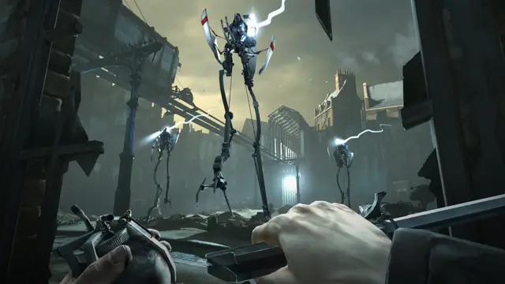
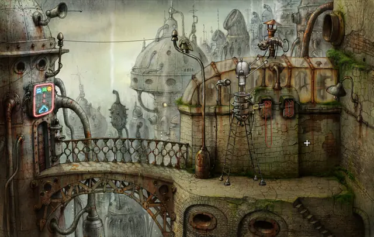
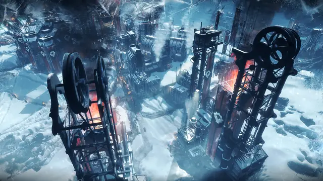
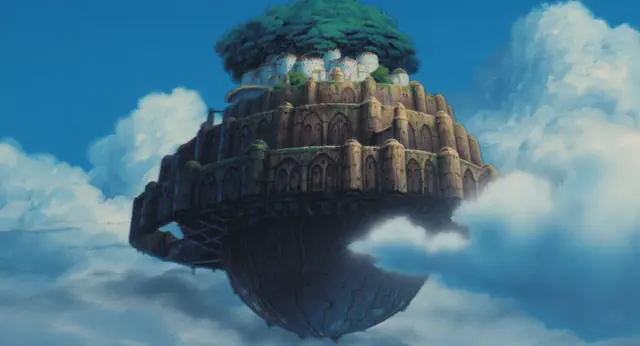
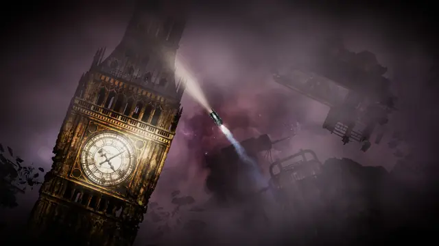
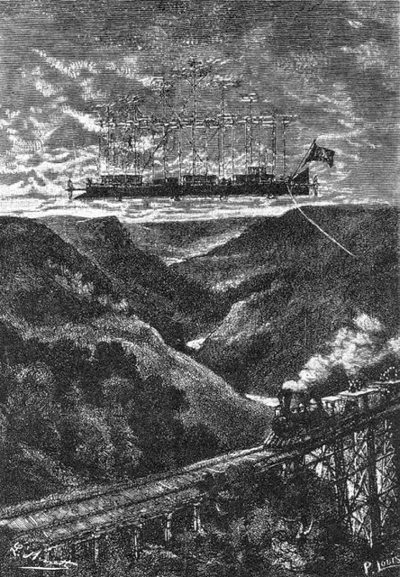
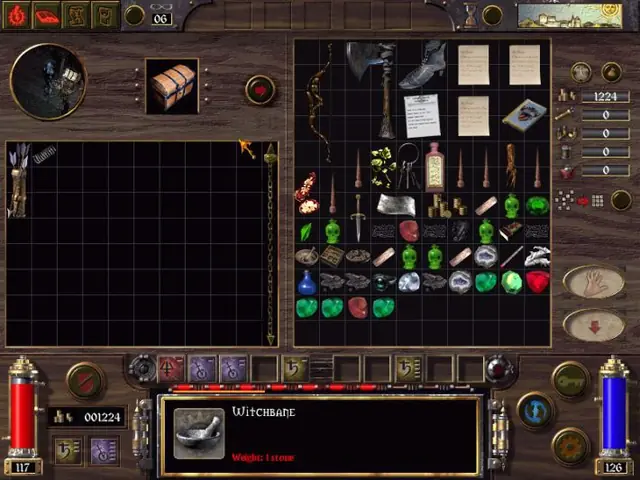
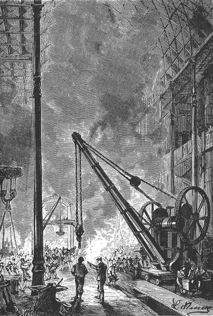
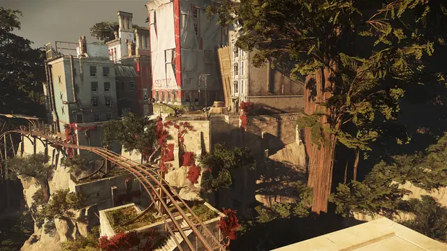
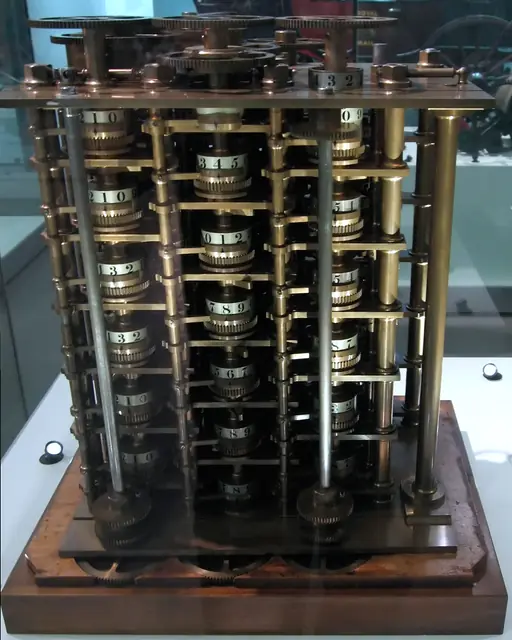
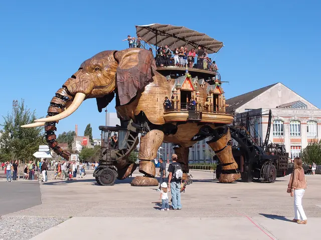
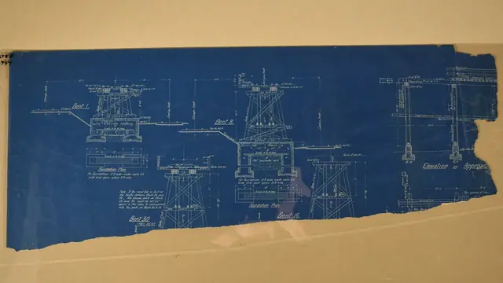
Games
- The Chaos Engine
Its designer was inspired by The Difference Engine, and Dan Malone built each character from feet about 16 pixels apart.6
- Thief II: The Metal Age
The Mechanist leader Karras builds the city's contraptions and security systems. Study his order's tower, Angelwatch.20
- Arcanum: Of Steamworks and Magick Obscura
Troika started from an industrial revolution upending a Tolkien-style world.21 Study the brass interface.
- Machinarium
Rusty, hand-drawn robots, inspired by old machines and abandoned factories.22 Every screen is a texture lesson.
- Dishonored
Whale oil powers its technology, and whaling its economy.3,10 Study how the fuel shapes the city.
- BioShock Infinite
Study a floating city that shows off its machinery in bright sunlight instead of smoke.
- Frostpunk
The city is laid out in a circle around its generator.7 Study how the power source becomes the map.
- Sunless Skies
A spacefaring steam locomotive for a Victorian empire that has taken to the stars.23 Note the deep violets.
Film, art and more
- Twenty Thousand Leagues Under the Seas
Verne is one of steampunk's two acknowledged forerunners.2 Study the engravings of the Nautilus.
- Le Vingtième Siècle
Robida wrote and illustrated this look at twentieth-century life, its pictures full of flying machines.24
- Castle in the Sky
Study the flying fortress, the pirates' airships and the mining town.
- The Difference Engine
A Victorian Britain where Babbage's engines were built, and one of the genre's foundational novels.6,2
- Howl's Moving Castle
Study the castle: chimneys, turrets and iron plates heaped on bird legs.
- Steamboy
A boy inventor, a powerful steam ball and a steam tower that shakes off its building like a shell.2
- Les Machines de l'Île
A 12-metre elephant of steel and wood, where riders watch the moving gears that power its legs.25 Proof the look can be built for real.
- Steampunk Rally
Famous inventors such as Nikola Tesla and Marie Curie build fantastical contraptions of steam, heat and electricity from machine-part cards, then race them through the Swiss Alps.26
Sources
- 1Steampunk
- 2Reclaiming the Machine: An Introductory Look at Steampunk in Everyday Practice
- 3The blubber-based world of Dishonored
- 4GDC 2013: Dishonored's Dunwall influenced by dev visits to London, Edinburgh
- 5steampunk n.
- 6Read an Excerpt from 'The Bitmap Brothers: Universe' on the Creation of The Chaos Engine
- 7How 11 bit studios created society survival simulator Frostpunk
- 8Boiling Point
- 9The Giffard Airship
- 10How Dishonored’s artists created an oppressive, Victorian, steampunk world from scratch
- 11Frostpunk developers on hope, misery, and the ultimately terrifying book of laws
- 12Gear
- 13The PBR Guide, Part 2: Practical Guidelines for Creating PBR Textures
- 14Metal Edge Wear
- 15Dirt
- 16Exhibition sheds new light on renowned Leeds artist John Atkinson Grimshaw
- 17Light.colorTemperature
- 18Besley Clarendon
- 19SteamWorld Heist taps Steam Powered Giraffe for OST
- 2020 Years On: Thief II
- 21Leonard Boyarsky Joins the Roundtable
- 22Road To The IGF: Amanita Design's Machinarium
- 23Sunless Skies
- 24Short Skirts, Telephonoscopes and Ancient Locomotives: Albert Robida’s Vision of the Twentieth Century
- 25The Grand Éléphant
- 26Steampunk Rally